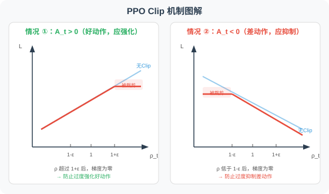
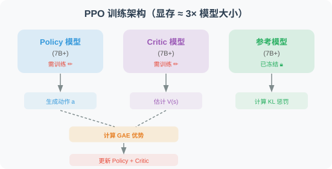

10.3 PPO：近端策略优化
在 10.1 节 中，我们介绍了 Agentic-RL 的两阶段训练范式（SFT → RL）。RL 阶段的核心问题是：如何根据奖励信号来更新模型参数？ 这正是策略优化算法要解决的问题。
本节将从零开始，系统性地讲解 PPO（Proximal Policy Optimization）算法——它是 InstructGPT 和 ChatGPT 的核心训练算法，也是理解后续 DPO、GRPO 算法的基础。我们将从最基本的直觉出发，逐步推导数学公式，并通过大量图示帮助理解。
预备知识：策略梯度的基本思想
在深入三种算法之前，我们需要理解一个共同的起点——策略梯度（Policy Gradient） [1]。
核心直觉
想象你在练习投篮。每次投篮后，你会得到一个反馈：进了（奖励 +1）或没进（奖励 0）。策略梯度的思想极其朴素：
如果某个动作获得了高奖励，就增加该动作的概率；如果获得了低奖励，就降低该动作的概率。
形式化地，策略梯度定理给出的梯度方向为：
下面我们逐项拆解这个公式，并用一个具体的语言模型例子来帮助理解。
① —— "我该往哪个方向调参数？"
- 是我们的总目标：模型在所有可能输入上的期望累积奖励。 越大，模型整体表现越好
- 是对模型参数 （即模型中数十亿个权重值）求梯度
- 就是一个与 同维度的向量，它告诉我们：如果把每个参数往哪个方向微调一点点， 会增大最快
- 训练时我们做的就是：（ 是学习率），即沿梯度方向"上坡"
类比：你蒙着眼站在山坡上，梯度就是"脚下最陡的上坡方向"。每走一步（更新一次参数），你就往山顶（最大奖励）靠近一点。
② —— "怎样调参数才能让这个动作更可能发生？"
这是公式中最核心也最难理解的部分，我们分层解释：
第一层： 是什么？
就是我们的语言模型。给定当前状态 （对话历史 + 已生成的 token），它输出一个概率分布，表示"下一个 token 是什么"的概率。例如：
| 下一个 token () | 概率 |
|---|---|
| "搜索" | 0.35 |
| "回答" | 0.25 |
| "计算" | 0.20 |
| "我" | 0.10 |
| ... | ... |
表示：在当前上下文下，模型认为下一步输出"搜索"的概率是 35%。
第二层： 为什么取对数？
取对数有两个好处：
- 数值稳定：概率值在 0 到 1 之间，连乘多个 token 的概率会变得极小（如 ），取对数后变为加法（），避免数值下溢
- 梯度形式简洁：，这个比率形式恰好是我们需要的
第三层： 到底是什么？
这被称为得分函数（score function）。它是一个与模型参数 同维度的向量，指出：
"如果想让动作 在状态 下的概率增大，模型的每个参数应该分别往哪个方向调？"
- 它不直接改变概率，而是给出一个方向
- 沿这个方向调整参数 → 增大（这个动作变得更可能）
- 沿相反方向调整参数 → 减小（这个动作变得更不可能）
类比：得分函数就像动作 的"方向盘"——转动它可以增加或减少这个动作被选中的概率。但光有方向盘不够，你还需要知道该转多少——这就是下面 的作用。
③ —— "这个方向盘该转多少？"
是整条轨迹（从开始到结束的完整交互过程）的累积奖励，它充当权重：
-
（正奖励）：说明这条轨迹整体表现不错
- 梯度 = 正权重 × 得分函数 → 沿得分函数方向更新 → 增加轨迹中每个动作的概率
- 直觉：这次表现好，下次要更多地做类似的事情
-
（负奖励）：说明这条轨迹整体表现很差
- 梯度 = 负权重 × 得分函数 → 沿得分函数反方向更新 → 减少轨迹中每个动作的概率
- 直觉：这次表现差，下次要避免做类似的事情
-
（零奖励）：这条轨迹对梯度无贡献
-
越大：权重越大，这条轨迹对参数更新的影响越大。奖励/惩罚越极端，模型"记忆"越深刻
类比： 就像教练的评分。得分函数指明了方向盘， 决定了转多大的角度。教练打高分（）→ 大力转向"增加该动作概率"；教练打低分（）→ 大力转向"减少该动作概率"。
④ —— "轨迹中每一步都要算"
一条轨迹包含 个时间步（从 到 ），每一步都有一个 对。求和意味着：轨迹中每一步的得分函数都被同一个 加权。
在语言模型中，一步 = 生成一个 token。如果模型生成了一个 50 token 的回答，，那么这 50 个 token 中每一个的生成概率都会被同一个总奖励加权更新。
注意：这其实是一个粗糙的做法——用整条轨迹的总奖励来加权每一步。如果轨迹中前 30 个 token 是正确推理，后 20 个 token 是错误结论，它们都会被总奖励同等对待。这就是"信用分配问题（credit assignment）"——PPO 的优势函数 正是为了解决这个问题（见 §1.3）。
⑤ —— "对很多次尝试取平均"
是期望运算符， 表示轨迹 是按策略 随机采样的。
- 因为语言模型的生成是随机的（通过 temperature 采样），同一个输入可能产生不同的输出
- 每次采样得到一条轨迹 ，对应一个 值
- 期望就是对所有可能轨迹加权平均——概率越高的轨迹权重越大
实际操作中：我们无法枚举所有可能轨迹（语言模型的输出空间是天文数字级的），因此用蒙特卡洛近似——采样 条轨迹，取平均作为期望的估计：
越大，估计越准确，但计算成本也越高。这就是训练中 batch size 的本质。
完整例子：语言模型 Agent 的一次策略梯度更新
假设我们正在训练一个能调用搜索工具的 Agent，用户提问"北京今天天气如何？"
采样两条轨迹：
| 轨迹 A（好的回答） | 轨迹 B（差的回答） | |
|---|---|---|
| 用户："北京今天天气如何？" | 用户："北京今天天气如何？" | |
<think> | <think> | |
| 需要查询实时天气 | 我直接回答吧 | |
</think> | </think> | |
<tool_call>search("北京天气")</tool_call> | 北京今天晴天，25°C | |
| ... | （获取结果后给出准确回答） | （瞎编的，可能完全错误） |
| +0.8（调用了工具，回答准确） | -0.2（没调用工具，回答错误） |
梯度更新效果：
- 轨迹 A（）：模型会增加"遇到实时信息问题 → 调用搜索工具"这一系列动作的概率
- 轨迹 B（）：模型会减少"遇到实时信息问题 → 直接瞎编回答"这一系列动作的概率
经过成千上万次这样的更新，模型逐渐学会：遇到需要实时信息的问题，应该先调用工具，而不是直接编造答案。
原始策略梯度的缺陷
虽然直觉清晰，但原始策略梯度有两个严重问题：
| 问题 | 具体表现 | 后果 |
|---|---|---|
| 高方差 | 可能在不同轨迹间差异极大 | 梯度估计不稳定，训练收敛极慢 |
| 步长不可控 | 没有约束单步更新的大小 | 一次"大跳步"就可能毁掉整个策略 |
PPO、DPO、GRPO 各自用不同方式解决了这两个问题。 本节详细讲解 PPO，DPO 和 GRPO 将分别在 10.4 和 10.5 中介绍。
1.1 PPO 解决了什么问题？
PPO [2] 是 OpenAI 于 2017 年提出的策略优化算法，是 InstructGPT [3] 和 ChatGPT 的核心训练算法。PPO 的设计目标是：
在保证训练稳定性的前提下，尽可能高效地利用已采样数据来更新策略。
PPO 通过两个关键机制实现这一目标：
- 重要性采样：允许用"旧策略"采集的数据来训练"当前策略"（数据复用）
- Clip 裁剪：限制策略更新的步长，防止策略崩溃
1.2 重要性采样比率 ：离策训练的核心
在策略梯度中，我们需要从当前策略 中采样轨迹来计算梯度。但如果每次更新参数后都重新采样，效率极低。重要性采样 允许我们用旧策略 的样本来估计新策略 的梯度。
核心是引入重要性采样比率：
逐项解读：
- 分子 ：当前策略在状态 下选择动作 的概率
- 分母 ：采样时的旧策略选择该动作的概率
- ：当前策略与旧策略对这个动作的偏好完全一致
- ：当前策略比旧策略更倾向于这个动作（即"当前策略认为这个动作更好了"）
- ：当前策略比旧策略更不倾向于这个动作（"当前策略认为这个动作变差了"）
- ：当前策略选择该动作的概率是旧策略的 2 倍
重要性采样的直觉：假设旧策略采样到某个动作的概率是 10%（），而当前策略认为该动作概率应该是 30%（），则 。这意味着如果用旧策略的数据来估计新策略的期望，每条这样的数据应该被赋予 3 倍权重——因为新策略"本应"更频繁地采到它。
1.3 优势函数 ：判断动作的"好坏"
策略梯度中，用累积奖励 作为权重会导致高方差。优势函数（Advantage Function） 通过引入一个基准线来解决这个问题：
- ：在状态 下执行动作 后，能获得的期望累积奖励（动作价值）
- ：在状态 下，按当前策略执行所能获得的期望累积奖励（状态价值，即"基准线"）
- ：动作 比"平均水平"好 → 应当强化
- ：动作 比"平均水平"差 → 应当抑制
- ：动作 与平均水平持平 → 无需调整
为什么减去基准线能降低方差？ 一个形象的比喻：假设你考试得了 85 分。如果全班平均 60 分，你会觉得"考得不错"（）；如果全班平均 90 分，你会觉得"发挥失常"（）。把绝对分数转为相对分数，消除了分数尺度的干扰，让信号更加稳定。
1.4 GAE：广义优势估计
实际训练中， 和 都不是精确已知的，需要用一个 Critic 模型 来估计。GAE（Generalized Advantage Estimation） [4] 是一种融合多步估计的方法，在偏差和方差之间取得平衡：
其中 TD 误差（Temporal Difference Error） 定义为：
逐项解读 TD 误差：
- ：在时间步 实际获得的即时奖励
- ：Critic 对下一状态的价值估计，乘以折扣因子
- ：Critic 对当前状态的价值估计
- 直觉： 衡量的是 "实际发生的"（）与 "Critic 预期的"（）之间的差异。如果 ，说明实际结果超出预期（惊喜！）； 则说明实际结果不如预期（失望！）
逐项解读 GAE：
- ：指数衰减权重——越远的时间步，对当前优势的贡献越小
- ：GAE 折衷参数，控制偏差-方差权衡：
| 值 | GAE 退化为 | 偏差 | 方差 | 直觉 |
|---|---|---|---|---|
| 单步 TD： | 高（完全依赖 Critic 精度） | 低 | 只看一步的"惊喜" | |
| 蒙特卡洛： | 低（用完整轨迹） | 高 | 看完整轨迹的表现 | |
| 推荐值 | 适中 | 适中 | 兼顾近期和远期信息 |
📌 关键问题：GAE 需要 Critic 模型 来估计状态价值。对于大语言模型（如 7B 参数），这意味着需要额外加载一个同等规模的 Critic 模型——这是 PPO 在大模型训练中最大的资源瓶颈。
1.5 PPO Clip 机制：策略更新的"安全绳"
有了优势 和比率 ，PPO 的损失函数为：
这个公式看起来复杂，但核心思想很简单。让我们分两种情况理解：
情况 ①：（好动作，应强化）
- 无 Clip 时： 越大（即越增加该动作概率），损失越小 → 梯度会推动策略不断增加该动作概率
- 有 Clip 时： 超过 后， 不再增大 → 取到裁剪值 → 梯度变为零
- 效果：即使动作很好，也不允许概率增加太多（防止"过度自信"）
情况 ②：（差动作，应抑制）
- 无 Clip 时： 越小（即越降低该动作概率），损失越小 → 梯度会推动策略大幅降低该动作概率
- 有 Clip 时： 低于 后，梯度变为零
- 效果：即使动作很差，也不允许概率降低太多（防止"矫枉过正"）

Clip 参数 的含义：（通常取 0.1–0.3）定义了"信任域"的大小——每次策略更新，每个动作的概率变化不得超过旧策略的 倍。 越小越保守， 越大越激进。
1.6 KL 散度惩罚：防止策略"跑偏"的另一道保险
Clip 机制限制的是单个动作的概率变化幅度，但它无法约束策略整体分布的漂移。在 RLHF 场景中，如果模型为了追求高奖励而"忘记"了 SFT 阶段学到的通用语言能力（如语法、连贯性），就会出现语言退化或奖励黑客（reward hacking）——模型找到某种"讨巧"的输出模式来骗取高奖励，但人类读起来一塌糊涂。
为此，PPO 在 RLHF 中通常会额外加入一个 KL 散度惩罚项，完整的优化目标变为：
其中 KL 散度定义为：
逐项解读：
- ：参考策略（Reference Policy）——详见下方专门说明
- ：衡量当前策略 相对于参考策略 的分布偏离程度。 表示两者完全一致； 越大，偏离越严重
- ：KL 惩罚系数——控制"探索新策略"与"保持原有能力"之间的平衡
关于 KL 散度的数学定义和直觉解释，请参阅 附录 E：KL 散度详解
什么是 Reference 模型（）？
Reference 模型是 RLHF 和 GRPO 中一个非常重要的概念，初学者容易将它与"旧策略"（）混淆。我们用一个表格来彻底厘清：
| Reference 模型 | 旧策略 | |
|---|---|---|
| 是什么 | RL 训练开始前的 SFT 模型快照 | 当前 RL 迭代开始时的策略模型快照 |
| 何时创建 | RL 训练启动时，复制一份 SFT 模型 | 每次采样新数据前，复制当前 Policy 模型 |
| 是否更新 | ❌ 永远不更新（冻结参数） | ✅ 每轮迭代更新一次（同步为当前策略） |
| 存在目的 | 充当"锚点"，防止策略偏离 SFT 太远 | 提供重要性采样的分母（数据复用） |
| 作用范围 | 整个 RL 训练过程 | 仅在当前迭代内有效 |
| 用在哪里 | KL 散度惩罚 | 重要性采样比率 |
形象比喻：
想象你在学开车（RL 训练）。驾校教练教会了你基本操作（SFT），现在你上路练习。
- Reference 模型 = 教练手册上的标准操作规范。无论你练了多久，手册永远不变。它的作用是：如果你的驾驶习惯偏离标准太远（比如开始"飙车"），就把你拉回来。
- 旧策略 = 你上一次练车结束时的驾驶水平。每次练完车，你的水平都会提升一点。它的作用是：评估你这次练车相比上次有哪些变化。
为什么需要 Reference 模型？
在 RL 训练过程中，模型会不断迭代更新。如果没有 Reference 模型作为锚点，可能出现以下问题：
- 奖励黑客（Reward Hacking）：模型发现某种"讨巧"的输出模式可以骗取高奖励（如不断重复某个高奖励短语），但实际输出质量极差
- 语言退化（Language Degeneration）：模型为追求奖励而丧失了 SFT 阶段学到的语法能力、连贯性和通用知识
- 模式坍缩（Mode Collapse）：模型对所有输入都生成类似的"安全"回答，丧失多样性
KL 散度 就像一根"弹力绳"——当 偏离 越远，惩罚越大，把策略拉回来。
训练过程中三个模型的时间线示意：
时间 →
RL 迭代 1 RL 迭代 2 RL 迭代 3
───────── ───────── ─────────
π_ref: [SFT 模型] ════════════════════════════════════ （永远不变）
π_θ_old: [SFT 模型]──→[θ₁]──→[θ₁]──→[θ₂]──→[θ₂]──→[θ₃] （每轮迭代开始时同步）
采样↓ 更新↑ 采样↓ 更新↑ 采样↓
π_θ: [SFT 模型]→→→[θ₁] [θ₁]→→→[θ₂] [θ₂]→→→[θ₃] （持续训练更新）
- 第 1 行： 始终是 SFT 模型，从头到尾不变
- 第 2 行： 在每轮迭代开始时，从 复制一份快照
- 第 3 行： 是持续训练更新的 Policy 模型
📌 实现细节：Reference 模型需要单独占用显存。对于 7B 参数模型（bf16），Reference 模型约占 14GB 显存。为了节省显存，有些实现会使用 LoRA 适配器——此时 Reference 模型不需要单独加载，只需在推理时关闭 LoRA 适配器即可得到 的输出。
的作用与调节：
| 值 | 效果 | 适用场景 |
|---|---|---|
| 过小（如 0.001） | KL 约束几乎无效，策略可大幅偏离 | 探索性强，但容易奖励黑客、语言退化 |
| 适中（如 0.01–0.1） | 平衡探索与约束，推荐起始值 | 大多数 RLHF 场景 |
| 过大（如 1.0） | 策略几乎无法偏离 SFT 模型 | RL 训练形同虚设 |
自适应 KL 控制：InstructGPT [3] 提出了一种动态调节 的方法——设定一个目标 KL 值 ，如果实际 超过目标值，则增大 （收紧约束）；反之则减小 （放松约束）：
其中 是调节步长（通常取 0.1–0.2）。这种自适应机制让训练更加稳健——不需要手动精调 。
Clip + KL 的协同作用：
| 约束机制 | 约束对象 | 约束粒度 | 直觉 |
|---|---|---|---|
| Clip | 单个动作的概率比 | 局部（逐 token 级别） | "每一步不能走太远" |
| KL | 整体输出分布 vs | 全局（策略级别） | "总体路线不能偏离太远" |
两者互补：Clip 防止单步更新过大，KL 防止累积漂移过大。在实践中，两者通常同时使用。
1.7 PPO 完整训练流程
PPO 的训练需要同时维护以下模型：

1.8 PPO 核心代码实现
下面用 PyTorch 代码完整实现 PPO 的核心组件，帮助从代码层面理解每个公式的含义。
1.8.1 GAE 优势估计
import torch
import torch.nn.functional as F
def compute_gae(
rewards: torch.Tensor, # [T] 每步即时奖励
values: torch.Tensor, # [T+1] Critic 估计的状态价值（含终止状态）
gamma: float = 1.0, # 折扣因子（语言模型任务通常取 1.0）
lam: float = 0.95, # GAE λ 参数
) -> torch.Tensor:
"""
计算 GAE（广义优势估计）
公式：A_t = Σ (γλ)^l · δ_{t+l}
其中 δ_t = r_t + γ·V(s_{t+1}) - V(s_t)
Args:
rewards: 每步获得的即时奖励，形状 [T]
values: Critic 对每个状态的价值估计，形状 [T+1]
（最后一个是终止状态的价值，通常为 0）
gamma: 折扣因子，控制未来奖励的衰减
lam: GAE λ 参数，控制偏差-方差权衡
λ=0 → 单步 TD（低方差高偏差）
λ=1 → 蒙特卡洛（高方差低偏差）
Returns:
advantages: GAE 优势估计，形状 [T]
"""
T = len(rewards)
advantages = torch.zeros(T)
gae = 0.0 # 从最后一步向前累积
for t in reversed(range(T)):
# TD 误差：δ_t = r_t + γ·V(s_{t+1}) - V(s_t)
# "实际发生的" - "Critic 预期的"
delta = rewards[t] + gamma * values[t + 1] - values[t]
# GAE 递推：A_t = δ_t + γλ·A_{t+1}
# 等价于 A_t = Σ (γλ)^l · δ_{t+l}
gae = delta + gamma * lam * gae
advantages[t] = gae
return advantages
1.8.2 PPO Clip 损失
def ppo_clip_loss(
log_probs: torch.Tensor, # [B, T] 当前策略的 log π_θ(a_t|s_t)
old_log_probs: torch.Tensor, # [B, T] 旧策略的 log π_θ_old(a_t|s_t)
advantages: torch.Tensor, # [B, T] GAE 优势估计
clip_epsilon: float = 0.2, # Clip 范围 ε
) -> tuple[torch.Tensor, dict]:
"""
计算 PPO Clip 策略损失
公式：L = -E[min(ρ_t·A_t, clip(ρ_t, 1-ε, 1+ε)·A_t)]
Args:
log_probs: 当前策略对每个 token 的对数概率 [batch, seq_len]
old_log_probs: 旧策略对每个 token 的对数概率 [batch, seq_len]
advantages: 每个 token 的优势值 [batch, seq_len]
clip_epsilon: 裁剪范围，通常 0.1-0.3
Returns:
loss: 策略损失标量
metrics: 监控指标
"""
# ── 计算重要性采样比率 ────────────────────────────────────────
# ρ_t = π_θ(a_t|s_t) / π_θ_old(a_t|s_t)
# 在 log 空间做除法 = 做减法，再 exp 回去
ratio = torch.exp(log_probs - old_log_probs) # [B, T]
# ── 未裁剪的目标 ──────────────────────────────────────────────
# ρ_t · A_t
surr1 = ratio * advantages # [B, T]
# ── 裁剪后的目标 ──────────────────────────────────────────────
# clip(ρ_t, 1-ε, 1+ε) · A_t
clipped_ratio = torch.clamp(ratio, 1.0 - clip_epsilon, 1.0 + clip_epsilon)
surr2 = clipped_ratio * advantages # [B, T]
# ── PPO 损失 = -min(surr1, surr2) ────────────────────────────
# 取 min 确保：
# A>0 时：不让 ρ 超过 1+ε（防止过度强化）
# A<0 时：不让 ρ 低于 1-ε（防止过度抑制）
loss = -torch.min(surr1, surr2).mean()
# ── 监控指标 ──────────────────────────────────────────────────
with torch.no_grad():
# 裁剪比例：被裁剪的 token 占比（健康范围 0.1-0.3）
clip_fraction = ((ratio - 1.0).abs() > clip_epsilon).float().mean().item()
# 近似 KL 散度（用于监控策略偏移程度）
approx_kl = (old_log_probs - log_probs).mean().item()
metrics = {
"policy_loss": loss.item(),
"clip_fraction": clip_fraction, # > 0.5 说明更新步长太大
"approx_kl": approx_kl, # > 0.02 可能需要减小学习率
"mean_ratio": ratio.mean().item(), # 应接近 1.0
}
return loss, metrics
1.8.3 Critic（价值函数）损失
def critic_loss(
values: torch.Tensor, # [B, T] Critic 预测的 V(s_t)
returns: torch.Tensor, # [B, T] 实际回报 = advantages + old_values
) -> torch.Tensor:
"""
计算 Critic 损失（均方误差）
Critic 的目标：让 V_ϕ(s_t) 尽可能接近实际回报
Args:
values: Critic 对每个状态的价值预测 [batch, seq_len]
returns: 实际回报（GAE 优势 + 旧价值估计）[batch, seq_len]
Returns:
loss: Critic 损失标量
"""
return F.mse_loss(values, returns)
1.8.4 KL 散度惩罚
def kl_penalty(
log_probs: torch.Tensor, # [B, T] 当前策略的 log π_θ
ref_log_probs: torch.Tensor, # [B, T] 参考策略（SFT 模型）的 log π_ref
) -> torch.Tensor:
"""
计算当前策略与参考策略之间的 KL 散度
公式：D_KL(π_θ ‖ π_ref) = E[log(π_θ/π_ref)]
Args:
log_probs: 当前策略的对数概率
ref_log_probs: 参考策略的对数概率（SFT 模型，冻结参数）
Returns:
kl: KL 散度标量
"""
# KL = E[log π_θ - log π_ref]
kl = (log_probs - ref_log_probs).mean()
return kl
1.8.5 PPO 完整训练步骤
def ppo_training_step(
policy_model, # 策略模型 π_θ（可训练）
critic_model, # Critic 模型 V_ϕ（可训练）
ref_model, # 参考模型 π_ref（冻结，不训练）
input_ids, # 输入 token ids
response_ids, # 生成的回答 token ids
old_log_probs, # 旧策略的 log 概率
rewards, # 奖励信号
old_values, # 旧 Critic 的价值估计
clip_epsilon=0.2, # PPO Clip ε
kl_coef=0.01, # KL 惩罚系数 β
critic_coef=0.5, # Critic 损失权重
gamma=1.0, # 折扣因子
lam=0.95, # GAE λ
):
"""
PPO 单步训练的完整流程
总损失 = 策略损失 + β·KL惩罚 + c·Critic损失
"""
# ── Step 1: 计算当前策略的 log 概率 ──────────────────────────
# 前向传播，获取当前策略对每个 token 的对数概率
logits = policy_model(input_ids=input_ids, response_ids=response_ids)
log_probs = compute_token_log_probs(logits, response_ids) # [B, T]
# ── Step 2: 计算 Critic 的价值估计 ───────────────────────────
values = critic_model(input_ids=input_ids, response_ids=response_ids) # [B, T]
# ── Step 3: 计算 GAE 优势 ────────────────────────────────────
# 对 batch 中的每个样本分别计算 GAE
advantages_list = []
for b in range(rewards.shape[0]):
adv = compute_gae(rewards[b], old_values[b], gamma=gamma, lam=lam)
advantages_list.append(adv)
advantages = torch.stack(advantages_list) # [B, T]
# 标准化优势（减小方差，稳定训练）
advantages = (advantages - advantages.mean()) / (advantages.std() + 1e-8)
# 实际回报 = 优势 + 旧价值估计（用于训练 Critic）
returns = advantages + old_values[:, :-1]
# ── Step 4: 计算 PPO Clip 策略损失 ───────────────────────────
policy_loss, policy_metrics = ppo_clip_loss(
log_probs, old_log_probs, advantages, clip_epsilon
)
# ── Step 5: 计算 KL 散度惩罚 ────────────────────────────────
with torch.no_grad():
ref_logits = ref_model(input_ids=input_ids, response_ids=response_ids)
ref_log_probs = compute_token_log_probs(ref_logits, response_ids)
kl = kl_penalty(log_probs, ref_log_probs)
# ── Step 6: 计算 Critic 损失 ────────────────────────────────
c_loss = critic_loss(values[:, :-1], returns)
# ── Step 7: 总损失 ──────────────────────────────────────────
# 策略损失（让模型做对的事）+ KL 惩罚（不要忘了语言能力）+ Critic 损失（学会评估好坏）
total_loss = policy_loss + kl_coef * kl + critic_coef * c_loss
return total_loss, {
**policy_metrics,
"kl_divergence": kl.item(),
"critic_loss": c_loss.item(),
"total_loss": total_loss.item(),
}
📌 与 GRPO 代码的关键差异：
- PPO 需要额外维护一个 Critic 模型（
critic_model），它与 Policy 模型同等规模- 优势估计使用 GAE 递推（依赖 Critic），而不是 GRPO 的组内标准化
- 总损失包含三部分：策略损失 + KL 惩罚 + Critic 损失，而 GRPO 没有 Critic 损失
- 这也解释了为什么 PPO 的显存需求是 ≈ 3× 模型大小（Policy + Critic + Reference）
1.9 PPO 的优缺点总结
| 维度 | 评价 |
|---|---|
| ✅ 通用性 | 几乎适用于所有 RL 场景，不限于语言模型 |
| ✅ 稳定性 | Clip 机制提供了可靠的训练稳定性保障 |
| ✅ 理论基础 | 有成熟的理论支撑（信任域方法的简化） |
| ❌ 显存需求 | 需要 Critic 模型，显存占用 ≈ 3× 模型大小 |
| ❌ 训练复杂 | Critic 与 Policy 互相依赖，联合训练不稳定 |
| ❌ 超参数多 | GAE λ、Critic 学习率、clip ε、KL β 等需精心调节 |
PPO 是一个强大但资源消耗较大的算法——需要 Critic 模型、奖励模型和在线采样。下一节将介绍 DPO，它通过精妙的数学推导直接跳过了奖励模型和 Critic，将 RL 问题转化为简单的监督学习。
参考文献
[1] WILLIAMS R J. Simple statistical gradient-following algorithms for connectionist reinforcement learning[J]. Machine Learning, 1992, 8(3): 229-256.
[2] SCHULMAN J, WOLSKI F, DHARIWAL P, et al. Proximal policy optimization algorithms[R]. arXiv preprint arXiv:1707.06347, 2017.
[3] OUYANG L, WU J, JIANG X, et al. Training language models to follow instructions with human feedback[C]//Advances in Neural Information Processing Systems (NeurIPS). 2022.
[4] SCHULMAN J, MORITZ P, LEVINE S, et al. High-dimensional continuous control using generalized advantage estimation[C]//International Conference on Learning Representations (ICLR). 2016.